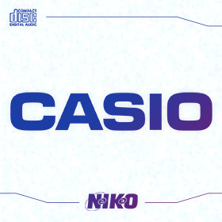
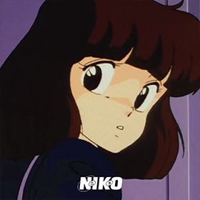
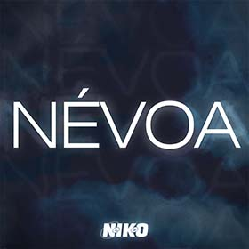
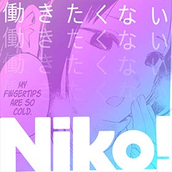
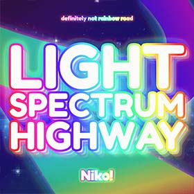
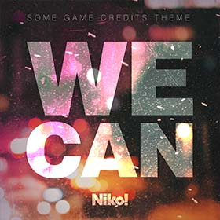

A Fuga
Single, 12 set. 2025
dia/noite
Single, 10 mar. 2025
Casio
Single, 04 mai. 2024
Shorts Vol. 1
Álbum, 07 fev. 2024
conquista.it
Remix, 02 jan. 2024
Nada Mais
Remix, 21 jun. 2023
Voltar Atrás
Remix, 06 mar. 2023
Ringtones, Vol. 1
Álbum, 15 fev. 2023
Névoa
Single, 03 fev. 2023
星座になれたら
Cover, 14 jan. 2023

CHAINSAW
Single, 07 out. 2022
働きたくない
Cover, 28 abr. 2022
Sayonara Bye Bye
Cover, 13 dez. 2021
Light Spectrum Highway
Single, 26 jun. 2021
minni
EP (Jingles), 04 fev. 2021
Door Into Summer
Cover, 25 ago. 2020
Summertime.MID
Álbum, 27 jun. 2020
Emerald Hill
Cover, 03 mai. 2020
Laboratory
Single, 22 dez. 2019
Groove Machine
Single, 02 fev. 2019
GAIDEN
Cover, 12 jan. 2019
We Can
Single, 03 fev. 2018
Party Night
Single, 14 set. 2017